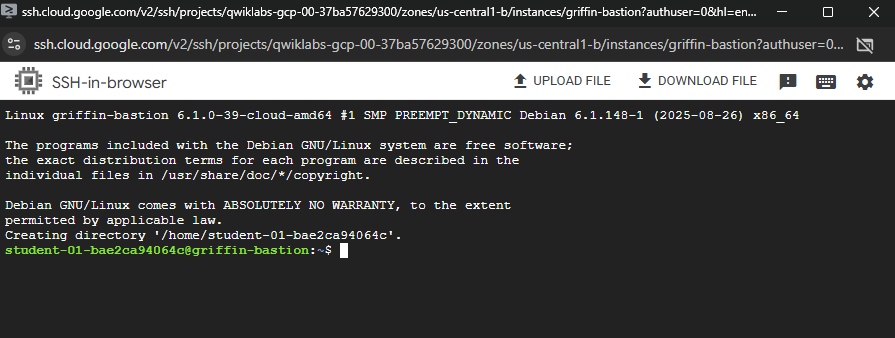
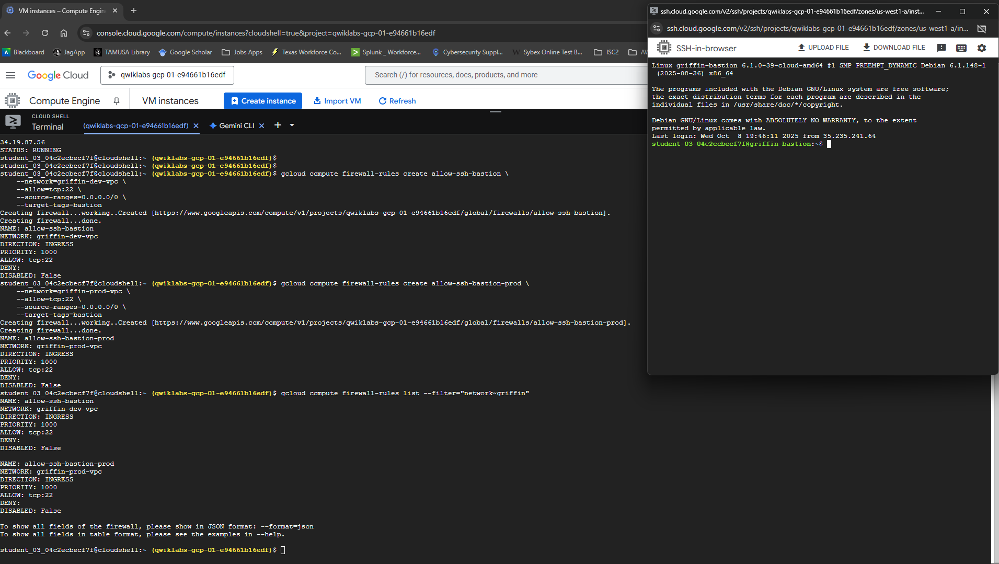
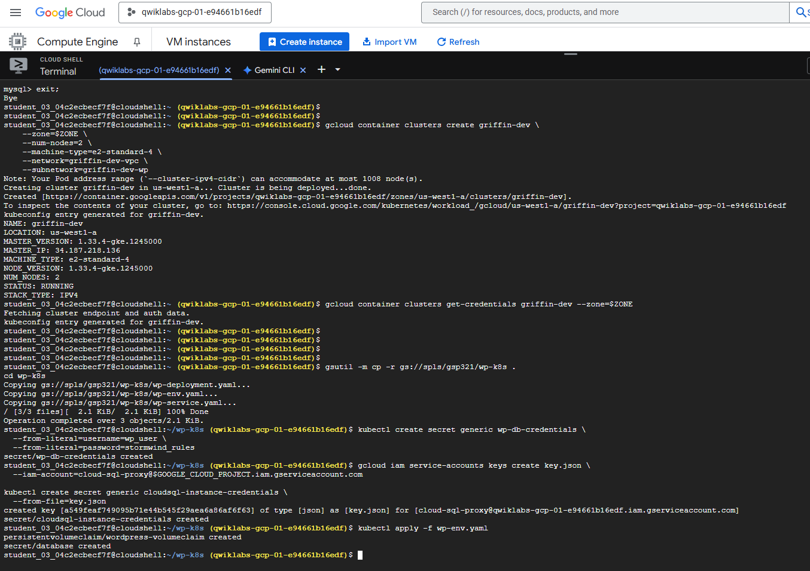
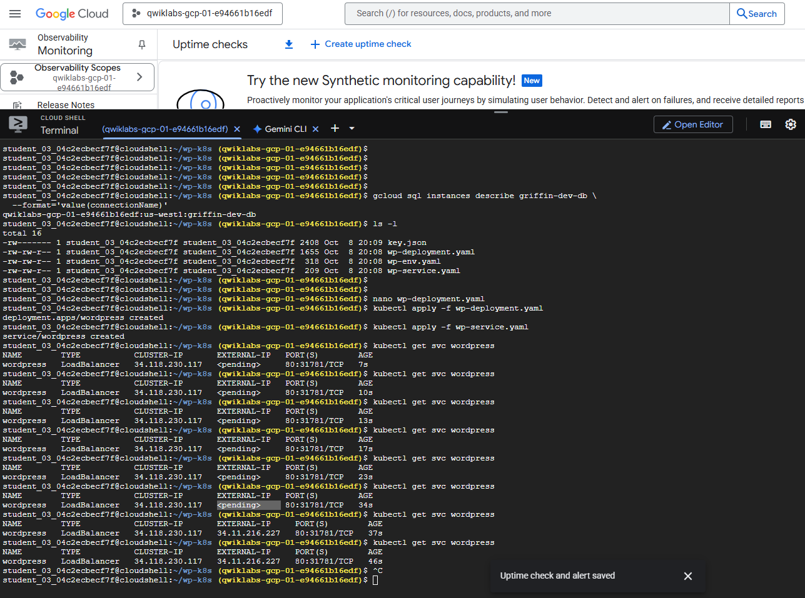
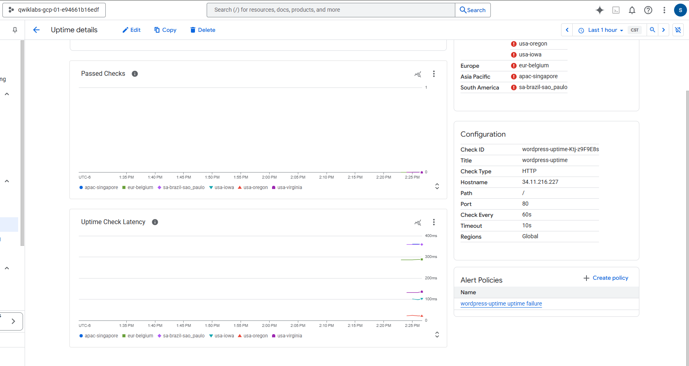
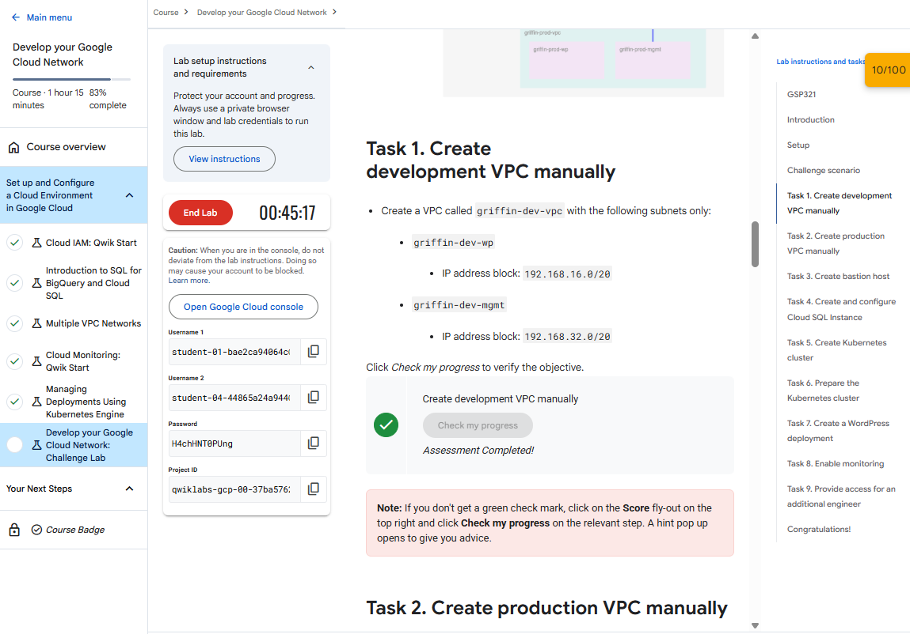

Network Foundation
Custom development and production VPCs, subnets, firewall rules, VM connectivity, and multi-NIC configuration.
Cloud Infrastructure • Networking • Google Cloud
A completed six-module Google Cloud project covering IAM, data services, VPC networking, monitoring, Kubernetes deployment strategies, and an end-to-end challenge environment.
Custom development and production VPCs, subnets, firewall rules, VM connectivity, and multi-NIC configuration.
Compute Engine, Cloud SQL, GKE, bastion access, and a WordPress deployment.
IAM, Cloud Storage, BigQuery, monitoring, alerting, dashboards, logs, and Kubernetes rollout strategies.
Six original challenge-lab screenshots are displayed here. The complete Markdown walkthroughs and screenshot sets remain in the repository.






Project Assignment 1 preserves the original six lab walkthroughs and their screenshots.